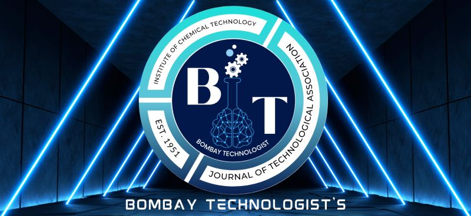

Overall Event Head
About The Bombay Technologist
The Bombay Technologist is the in-house peer reviewed research Journal of the Institute of Chemical Technology published semi-annually. It was started in 1951, by the erstwhile Technological Association, the highest decision making student body of the institute.Professor K. Venkatraman, a pioneer in Chemical Technology himself, envisioned the concept of an in-house research journal run by the institute and thus laid the foundation of Bombay Technologist. The Institute of Chemical Technology is itself an internationally renowned center for research. It churns out hundreds of quality research publications and numerous patents every year solely in Chemical Engineering and Technology. Such a distinction is enjoyed by few, globally.
For more information visit www.bombaytechnologist.com
Overall Event Head Position
As the overall event head of The Bombay Technologist, I am tasked with coordinating and overseeing various responsibilities to ensure the club's success. This includes organizing regular meetings and discussions, selecting engaging research papers for review, and inviting guest speakers to share their expertise. I manage logistics for events, such as securing venues, arranging materials, and promoting activities to attract participants. A key aspect of my role involves budget handling, where I develop and monitor financial plans for events, ensuring we stay within our allocated budget while maximizing resources. Additionally, I oversee the distribution of club merchandise, coordinating orders and ensuring that members receive items that foster club identity and spirit. Collaborating with club members and faculty, I strive to create an inclusive environment that encourages participation and intellectual discourse, while continually gathering feedback to improve our initiatives and enhance our community's academic growth in technology and related fields.